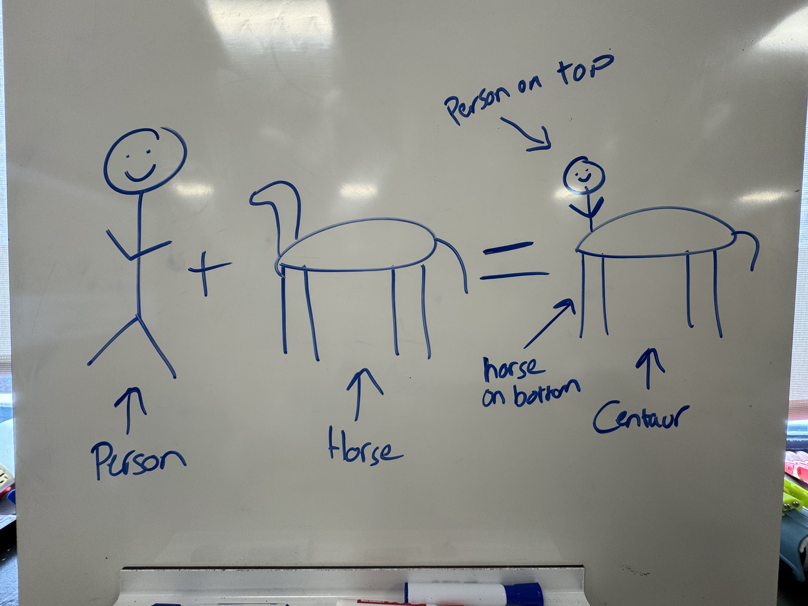
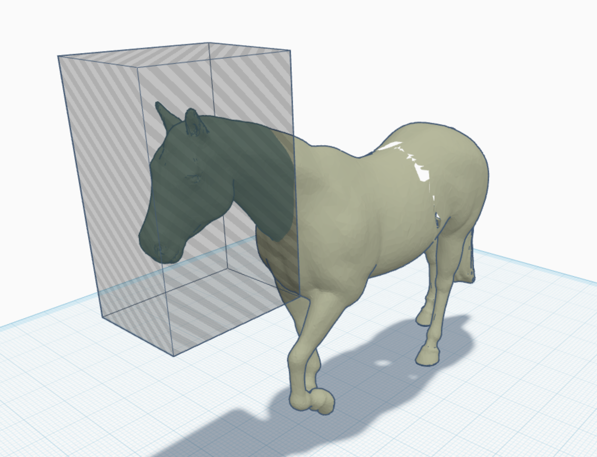
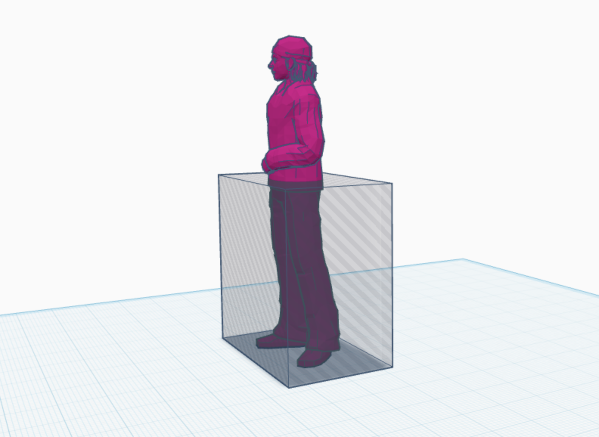
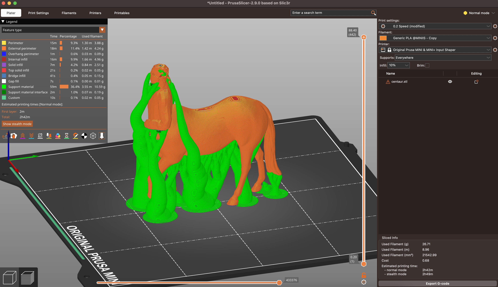
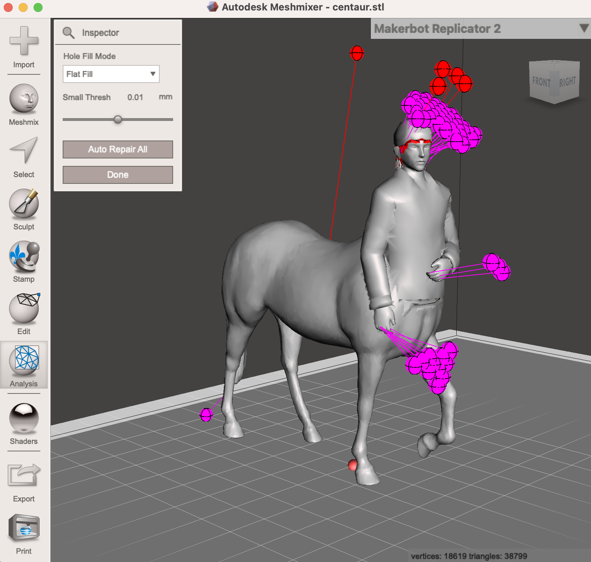
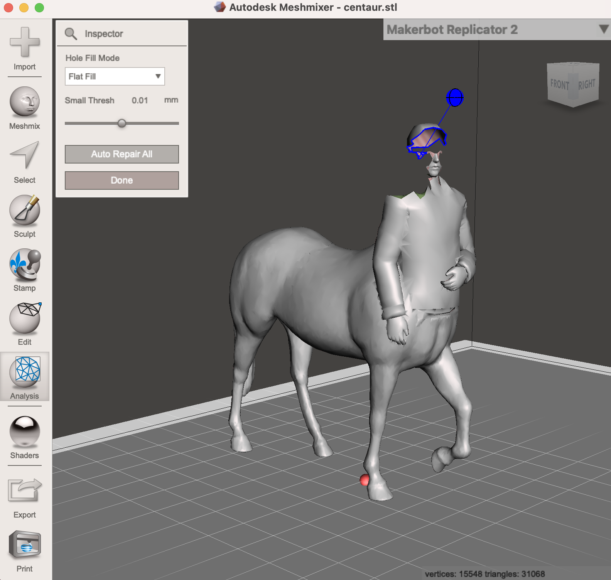
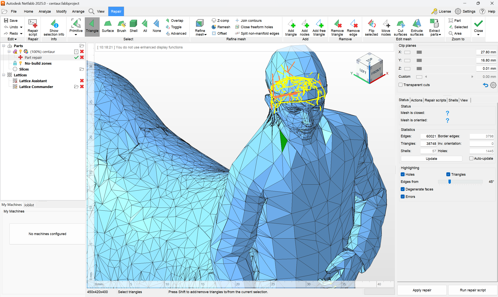
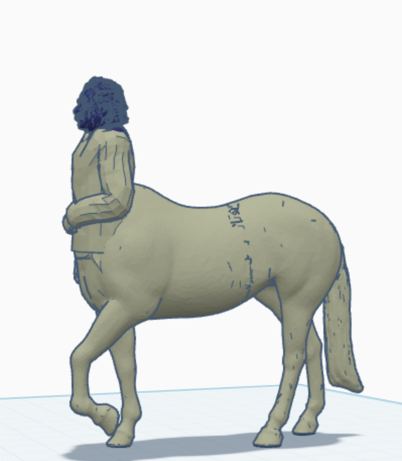
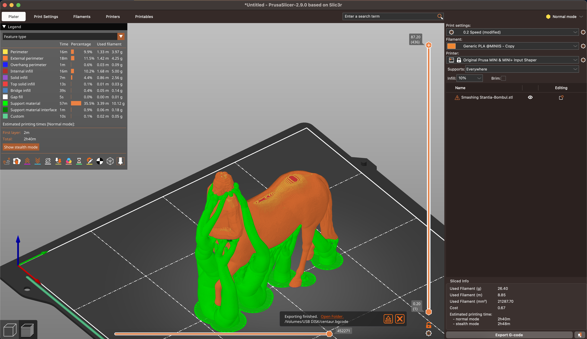

Write Up
Tinkercad

The first step of this assignment was to find 2-3 existing models that
I wanted to combine into one. I thought it would be fun to create a centaur!
The first model I found was the horse (thingaverse model 2785163).
This model was a simple start to my project. The next thing I found was the person
to be the top half of the centaur. The model I used was
(thingaverse model 661993) (man_standing_6).
To combine the models, I opened each of them in tinkercad and made the following cuts using the hole tool.

The first model I opened was the horse. I needed to cut the head off in order to create
space for the person. I used the box hole tool in tinkercad to do this. I positioned the box
where I wanted to cut and grouped it with the horse. This left me with a horse with no head.

The next model I needed to modify was the person. I needed to cut the legs off in order to attach
it to the horse. I used the box hole tool again to do this. I positioned the box where I wanted to cut
and grouped it with the person. This left me with a person with no legs.

Once I had the models combined into one, I was able to use the tinkercad export to STL feature to download my new ‘Remixed’
model and open it in PrusaSlicer. I used my standard 0.2mm layer height profile that I used for my previous project to slice
this model. After slicing, I previewed the layers and noticed that the STL had very thin walls at the head of the centaur.


I tried multiple different different options to repair this model. The first thing I tried was an online STL repair which did
nothing. The next thing I tried was using Meshmixer to repair the model. Meshmixer was able to find the issue parts as seen
in the image to the right. Also seen to the right is the poor job meshmixer did to fix the model. I was not able to find a way to
fix the thin walls in meshmixer so I had to move to the next option.

Because the Meshmixer repair didnt work, I had to try yet another repair method. The next thing I tried was the PrusaSlicer
STL repair algorithm which made some improvements to the model but did not fully fix the hole seen in the head in the images
above. Despite some improvements being made, they were not up to my liking. My last mesh repair option was using Netfabb.
This was recommended to me by Professor Roy who had used this tool to repair many models in the past. I was hopeful that
this would work, however, my model appeared to be beyond repair.

To stick with my idea of a centaur, I decided to find a different head model to use. The bust I went with was of Albert
Einstein https://www.thingiverse.com/thing:966908.
This model needed no cutting to work with the centaur that I had created, however, I did need to cut
the head off the existing centaur so I could replace the head.

After all my testing and experimenting with different repair tools, I was finally able to create a model
that would print. I sliced the model with the same settings as before and was sent it to the printer! The total print time
for this model was 2 hours and 40 minutes as seen in the image to the right.
Overall, this first part of the project was a great learning experience. I learned a lot about different errors and corruptions that
can occur in STL models. Previously, I had only ever thought that STL models could have holes, or be solid. I never
knew that STL models had walls that could be thin or thick. Having this hands on learning experience not only allowed
me to expand my knowledge of STL files and models, but also taught me multiple different ways to repair them.